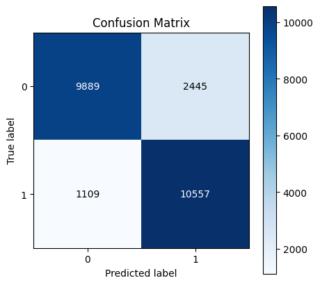
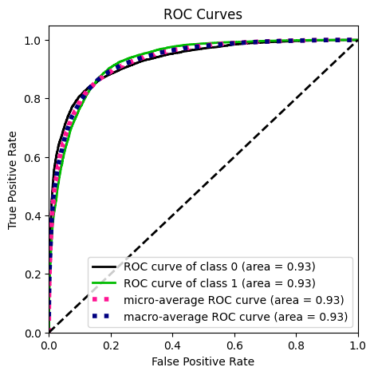
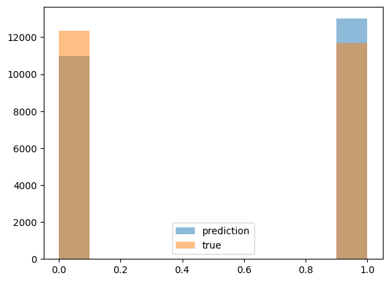
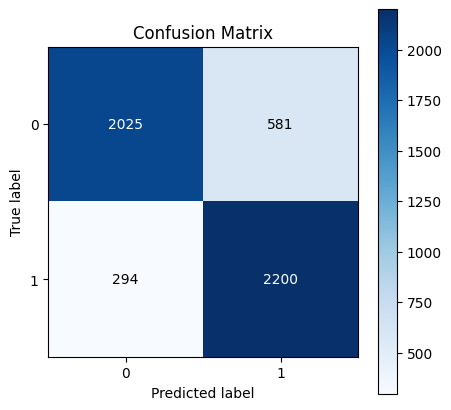
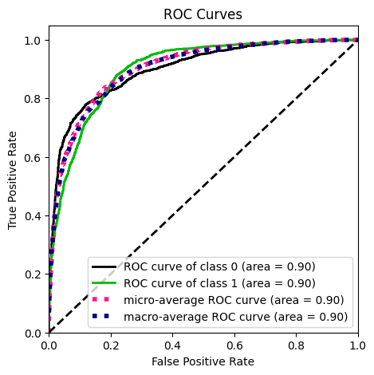
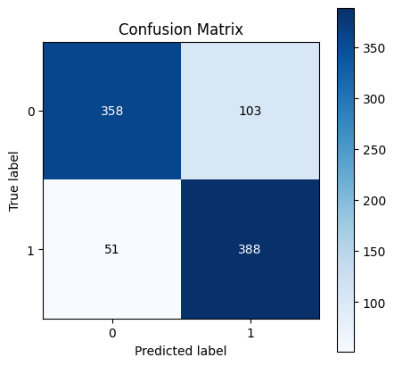
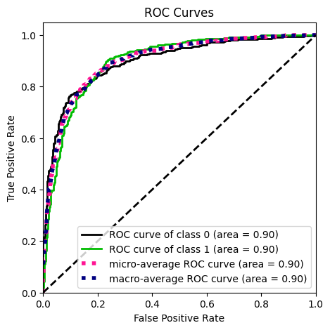
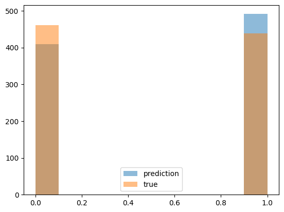

# ! data_creation --train_or_inference "TRAINING" --experiment_name "BASELINE"Iterate Upon a Model
Models Available For This Project To Play With Locally
Overview
This example aims to aid a data scientist or MLEs that would like to train their model in a notebook locally and see what the results would be with out sending results to snowflake. Most MLEs and Data Scientist love to experiment and this notebook aims to allow a user to test different model types
the form of a notebook that does not need to have a full pipeline to wait to be able to see the results or the model artifact. This example aims to show how a DS could quickly iterate and tune their approach rather than going in a pipeline and waiting for results.
There will be a future example in post analysis work, which is extremely fun work, but is currently outside of the goal of this process.
This would mean we would need a new feature set, more thought worthy base query for eligible guest to build upon, and a new call to our dependent variable for BOUGHTPASS to push out to three years. This structure wouldn’t need to change to this point and we would quickly iterate to see if we can get a model that can predict that question.
Obviously, there is more to it than that and the post analysis work would be much more rigorous as this would be a net new model not something that has performed well over the past couple of years.
What we will accomplish:
Pulling data from your experiment data creation.
Train your model using one of the models of your choice from your library.
Having the ability to use your model locally for your desired way of evaluating.
There are so many repos inside of Gitlab Vail Resorts that have so many different types of analysis approaches that the section on desired way of evaluating that if you need a spark go there and look around in the notebooks there is amazing work there.
Warning: this is a draft to get something out that is something that gets the majority of a project work flow that exists right now
WARINING To be able to use your scripts you need to install your library so make sure you pip install . in your terminal
Create Data From data_creation Script
This will create your data for your training set this can take some time depending on your query.
Below is the output of what it would look like if you were to call the data creation
# ! data_creation --train_or_inference 'INFERENCE' --experiment_name 'BASELINE'/Users/jeremydemlow/miniforge3/envs/ltbp/lib/python3.9/site-packages/snowflake/connector/options.py:96: UserWarning: You have an incompatible version of 'pyarrow' installed (6.0.0), please install a version that adheres to: 'pyarrow<8.1.0,>=8.0.0; extra == "pandas"'
warn_incompatible_dep(
INFO:root:This is a production run
INFO:root:Loading Yaml Files..
INFO:root:Generating Feature Set Query
INFO:root:static features in data set:
['DESTINATIONGEOAFINITYLABEL', 'GenderCode']
INFO:root:temporal features in data set:
['Age', 'AvgVisitPerSeason', 'BoughtPass', 'EverCorePass', 'EverPass', 'GuestBehavior', 'IsEpicMixActivated', 'MarketingZone', 'MostCommonTicketComp', 'MostSubSeasonVisited', 'MostVisitedRegion', 'MostVisitedResort', 'OnlySingleResortKey', 'PartnerResortScannerFlag', 'ResortsVisited', 'SkierabilityLabel', 'SubSeasonsPerYear', 'TotalSeasonsScanned', 'TotalVisits', 'VisitMostInPeak']
INFO:root:Appending static feature DESTINATIONGEOAFINITYLABEL to query
INFO:root:Appending static feature GenderCode to query
INFO:root:Finished appending static features
INFO:root:reading training_ecids_18_19.sql for base query...
INFO:root:reading training_ecids_19_20.sql for base query...
INFO:root:reading training_ecids_20_21.sql for base query...
INFO:root:final query output:
select
base.*
, joined.DESTINATIONGEOAFINITYLABEL
, joined.GenderCode
, MACHINELEARNINGFEATURES.PROD.Age_ECID_Temporal(base.ECID, 20171001, 20191005) as Age, MACHINELEARNINGFEATURES.PROD.AvgVisitPerSeason_ECID_Temporal(base.ECID, 20171001, 20191005) as AvgVisitPerSeason, MACHINELEARNINGFEATURES.PROD.BoughtPass_ECID_Temporal(base.ECID, '2019/20') as BoughtPass, MACHINELEARNINGFEATURES.PROD.EverCorePass_ECID_Temporal(base.ECID, 20151005, 20191005) as EverCorePass, MACHINELEARNINGFEATURES.PROD.EverPass_ECID_Temporal(base.ECID, 20151005, 20191005) as EverPass, MACHINELEARNINGFEATURES.PROD.GuestBehavior_ECID_Temporal(base.ECID, '2017/18') as GuestBehavior, MACHINELEARNINGFEATURES.PROD.IsEpicMixActivated_ECID_Temporal(base.ECID, '2017/18') as IsEpicMixActivated, MACHINELEARNINGFEATURES.PROD.MarketingZone_ECID_Temporal(base.ECID, '2017/18') as MarketingZone, MACHINELEARNINGFEATURES.PROD.MostCommonTicketComp_ECID_Temporal(base.ECID, 20171001, 20191005) as MostCommonTicketComp, MACHINELEARNINGFEATURES.PROD.MostSubSeasonVisited_ECID_Temporal(base.ECID, 20171001, 20191005) as MostSubSeasonVisited, MACHINELEARNINGFEATURES.PROD.MostVisitedRegion_ECID_Temporal(base.ECID, 20171001, 20191005) as MostVisitedRegion, MACHINELEARNINGFEATURES.PROD.MostVisitedResort_ECID_Temporal(base.ECID, 20171001, 20191005) as MostVisitedResort, MACHINELEARNINGFEATURES.PROD.OnlySingleResortKey_ECID_Temporal(base.ECID, 20171001, 20191005) as OnlySingleResortKey, MACHINELEARNINGFEATURES.PROD.PartnerResortScannerFlag_ECID_Temporal(base.ECID, 20171001, 20191005) as PartnerResortScannerFlag, MACHINELEARNINGFEATURES.PROD.ResortsVisited_ECID_Temporal(base.ECID, 20171001, 20191005) as ResortsVisited, MACHINELEARNINGFEATURES.PROD.SkierabilityLabel_ECID_Temporal(base.ECID, '2017/18') as SkierabilityLabel, MACHINELEARNINGFEATURES.PROD.SubSeasonsPerYear_ECID_Temporal(base.ECID, 20171001, 20191005) as SubSeasonsPerYear, MACHINELEARNINGFEATURES.PROD.TotalSeasonsScanned_ECID_Temporal(base.ECID, 20171001, 20191005) as TotalSeasonsScanned, MACHINELEARNINGFEATURES.PROD.TotalVisits_ECID_Temporal(base.ECID, 20171001, 20191005) as TotalVisits, MACHINELEARNINGFEATURES.PROD.VisitMostInPeak_ECID_Temporal(base.ECID, 20171001, 20191005) as VisitMostInPeak
, '2018/19' as SEASONYEAR
from
(select
distinct fs.ECID as ecid,
dd.SeasonYear as SeasonYear
from BIDE_EDWDB_ARA_PROD.dbo.FactScan fs
left join BIDE_EDWDB_ARA_PROD.dbo.DimDateSeason dd
on dd.DateSeasonKey = fs.DateSeasonKey
where
dd.SeasonYear in ('2018/19')
and fs.IsEmployee = 0
and dd.Season = 'Winter'
LIMIT 10000
)base
inner join machinelearningfeatures.prod.featurestore_ecid joined on joined.ecid = base.ecid
UNION ALL
select
base.*
, joined.DESTINATIONGEOAFINITYLABEL
, joined.GenderCode
, MACHINELEARNINGFEATURES.PROD.Age_ECID_Temporal(base.ECID, 20181001, 20201005) as Age, MACHINELEARNINGFEATURES.PROD.AvgVisitPerSeason_ECID_Temporal(base.ECID, 20181001, 20201005) as AvgVisitPerSeason, MACHINELEARNINGFEATURES.PROD.BoughtPass_ECID_Temporal(base.ECID, '2020/21') as BoughtPass, MACHINELEARNINGFEATURES.PROD.EverCorePass_ECID_Temporal(base.ECID, 20151005, 20201005) as EverCorePass, MACHINELEARNINGFEATURES.PROD.EverPass_ECID_Temporal(base.ECID, 20151005, 20201005) as EverPass, MACHINELEARNINGFEATURES.PROD.GuestBehavior_ECID_Temporal(base.ECID, '2018/19') as GuestBehavior, MACHINELEARNINGFEATURES.PROD.IsEpicMixActivated_ECID_Temporal(base.ECID, '2018/19') as IsEpicMixActivated, MACHINELEARNINGFEATURES.PROD.MarketingZone_ECID_Temporal(base.ECID, '2018/19') as MarketingZone, MACHINELEARNINGFEATURES.PROD.MostCommonTicketComp_ECID_Temporal(base.ECID, 20181001, 20201005) as MostCommonTicketComp, MACHINELEARNINGFEATURES.PROD.MostSubSeasonVisited_ECID_Temporal(base.ECID, 20181001, 20201005) as MostSubSeasonVisited, MACHINELEARNINGFEATURES.PROD.MostVisitedRegion_ECID_Temporal(base.ECID, 20181001, 20201005) as MostVisitedRegion, MACHINELEARNINGFEATURES.PROD.MostVisitedResort_ECID_Temporal(base.ECID, 20181001, 20201005) as MostVisitedResort, MACHINELEARNINGFEATURES.PROD.OnlySingleResortKey_ECID_Temporal(base.ECID, 20181001, 20201005) as OnlySingleResortKey, MACHINELEARNINGFEATURES.PROD.PartnerResortScannerFlag_ECID_Temporal(base.ECID, 20181001, 20201005) as PartnerResortScannerFlag, MACHINELEARNINGFEATURES.PROD.ResortsVisited_ECID_Temporal(base.ECID, 20181001, 20201005) as ResortsVisited, MACHINELEARNINGFEATURES.PROD.SkierabilityLabel_ECID_Temporal(base.ECID, '2018/19') as SkierabilityLabel, MACHINELEARNINGFEATURES.PROD.SubSeasonsPerYear_ECID_Temporal(base.ECID, 20181001, 20201005) as SubSeasonsPerYear, MACHINELEARNINGFEATURES.PROD.TotalSeasonsScanned_ECID_Temporal(base.ECID, 20181001, 20201005) as TotalSeasonsScanned, MACHINELEARNINGFEATURES.PROD.TotalVisits_ECID_Temporal(base.ECID, 20181001, 20201005) as TotalVisits, MACHINELEARNINGFEATURES.PROD.VisitMostInPeak_ECID_Temporal(base.ECID, 20181001, 20201005) as VisitMostInPeak
, '2019/20' as SEASONYEAR
from
(select
distinct fs.ECID as ecid,
dd.SeasonYear as SeasonYear
from BIDE_EDWDB_ARA_PROD.dbo.FactScan fs
left join BIDE_EDWDB_ARA_PROD.dbo.DimDateSeason dd
on dd.DateSeasonKey = fs.DateSeasonKey
where
dd.SeasonYear in ('2019/20')
and fs.IsEmployee = 0
and dd.Season = 'Winter'
LIMIT 10000
)base
inner join machinelearningfeatures.prod.featurestore_ecid joined on joined.ecid = base.ecid
UNION ALL
select
base.*
, joined.DESTINATIONGEOAFINITYLABEL
, joined.GenderCode
, MACHINELEARNINGFEATURES.PROD.Age_ECID_Temporal(base.ECID, 20191001, 20211005) as Age, MACHINELEARNINGFEATURES.PROD.AvgVisitPerSeason_ECID_Temporal(base.ECID, 20191001, 20211005) as AvgVisitPerSeason, MACHINELEARNINGFEATURES.PROD.BoughtPass_ECID_Temporal(base.ECID, '2021/22') as BoughtPass, MACHINELEARNINGFEATURES.PROD.EverCorePass_ECID_Temporal(base.ECID, 20151005, 20211005) as EverCorePass, MACHINELEARNINGFEATURES.PROD.EverPass_ECID_Temporal(base.ECID, 20151005, 20211005) as EverPass, MACHINELEARNINGFEATURES.PROD.GuestBehavior_ECID_Temporal(base.ECID, '2019/20') as GuestBehavior, MACHINELEARNINGFEATURES.PROD.IsEpicMixActivated_ECID_Temporal(base.ECID, '2019/20') as IsEpicMixActivated, MACHINELEARNINGFEATURES.PROD.MarketingZone_ECID_Temporal(base.ECID, '2019/20') as MarketingZone, MACHINELEARNINGFEATURES.PROD.MostCommonTicketComp_ECID_Temporal(base.ECID, 20191001, 20211005) as MostCommonTicketComp, MACHINELEARNINGFEATURES.PROD.MostSubSeasonVisited_ECID_Temporal(base.ECID, 20191001, 20211005) as MostSubSeasonVisited, MACHINELEARNINGFEATURES.PROD.MostVisitedRegion_ECID_Temporal(base.ECID, 20191001, 20211005) as MostVisitedRegion, MACHINELEARNINGFEATURES.PROD.MostVisitedResort_ECID_Temporal(base.ECID, 20191001, 20211005) as MostVisitedResort, MACHINELEARNINGFEATURES.PROD.OnlySingleResortKey_ECID_Temporal(base.ECID, 20191001, 20211005) as OnlySingleResortKey, MACHINELEARNINGFEATURES.PROD.PartnerResortScannerFlag_ECID_Temporal(base.ECID, 20191001, 20211005) as PartnerResortScannerFlag, MACHINELEARNINGFEATURES.PROD.ResortsVisited_ECID_Temporal(base.ECID, 20191001, 20211005) as ResortsVisited, MACHINELEARNINGFEATURES.PROD.SkierabilityLabel_ECID_Temporal(base.ECID, '2019/20') as SkierabilityLabel, MACHINELEARNINGFEATURES.PROD.SubSeasonsPerYear_ECID_Temporal(base.ECID, 20191001, 20211005) as SubSeasonsPerYear, MACHINELEARNINGFEATURES.PROD.TotalSeasonsScanned_ECID_Temporal(base.ECID, 20191001, 20211005) as TotalSeasonsScanned, MACHINELEARNINGFEATURES.PROD.TotalVisits_ECID_Temporal(base.ECID, 20191001, 20211005) as TotalVisits, MACHINELEARNINGFEATURES.PROD.VisitMostInPeak_ECID_Temporal(base.ECID, 20191001, 20211005) as VisitMostInPeak
, '2020/21' as SEASONYEAR
from
(select
distinct fs.ECID as ecid,
dd.SeasonYear as SeasonYear
from BIDE_EDWDB_ARA_PROD.dbo.FactScan fs
left join BIDE_EDWDB_ARA_PROD.dbo.DimDateSeason dd
on dd.DateSeasonKey = fs.DateSeasonKey
where
dd.SeasonYear in ('2020/21')
and fs.IsEmployee = 0
and dd.Season = 'Winter'
LIMIT 10000
)base
inner join machinelearningfeatures.prod.featurestore_ecid joined on joined.ecid = base.ecid
INFO:root:Data lake path for data push projects/LTBP/FY23/LocalRunTest/training_data/
INFO:root:Checking projects/LTBP/FY23/LocalRunTest/training_data/ to either skip creation for experiment or create a production datasetINFO:data_system_utilities.azure.storage:number of files in container path recursively 32
WARNING:root:projects/LTBP/FY23/LocalRunTest/training_data/ already exists this should be do experimentation runsGrab Data From Experiment
from LTBP.data.utils import snowflake_query, get_yaml_dicts
from LTBP.modeling.utils import (
create_stage_and_query_stage_sf, create_sklearn_preprocess_baseline_dict,
return_list_of_vars, prepare_training_set, save_sklearn_object_to_data_lake
)
import logging
import osyaml_file_list=['features.yaml', 'udf_inputs.yaml','etl.yaml','models.yaml']
prod_or_dev = 'dev'
experiment_name='BASELINE'
experiment = True # this will trigger if the feature set needs to be created
test_set = True
# Grab all yaml files for current probject
features, udf_inputs, etl_dict, models_dict = get_yaml_dicts(yaml_file_list)
# Create Snowflake Stage and Query Experiment location or commit location and return training data
sf = snowflake_query(sfSchema=prod_or_dev if prod_or_dev.lower() == 'dev' else 'LTBP')
df_train = create_stage_and_query_stage_sf(
sf=sf,
etl=etl_dict,
udf_inputs=udf_inputs,
train_or_inference='TRAINING',
experiment_name=experiment_name,
experiment=experiment,
indentification=models_dict['identification']
)
logging.info(f'size of test set {df_train.shape}')
df_train.head(2)INFO:data_system_utilities.snowflake.utils:stage_query:
create or replace stage ltbpFY23LocalRunTest
url='azure://vaildtscadls.blob.core.windows.net/vailadls/projects/LTBP/FY23/experiments/BASELINE'
credentials=(azure_sas_token='**MASKED**')
encryption=(type= 'NONE')
file_format = (type = parquet )
INFO:data_system_utilities.snowflake.utils:connection to snowflake established...
INFO:data_system_utilities.snowflake.query:executing query
INFO:data_system_utilities.snowflake.query:data loaded from snowflake
INFO:data_system_utilities.snowflake.query:connection to snowflake has been turned off
INFO:data_system_utilities.snowflake.query:Stage area LTBPFY23LOCALRUNTEST successfully created.
INFO:root:adls snowflake stage query
select
$1:"ECID"::varchar as ECID
, $1:"SEASONYEAR"::varchar as SEASONYEAR
, $1:"AGE"::varchar as AGE
, $1:"AVGVISITPERSEASON"::varchar as AVGVISITPERSEASON
, $1:"BOUGHTPASS"::varchar as BOUGHTPASS
, $1:"DESTINATIONGEOAFINITYLABEL"::varchar as DESTINATIONGEOAFINITYLABEL
, $1:"EVERCOREPASS"::varchar as EVERCOREPASS
, $1:"EVERPASS"::varchar as EVERPASS
, $1:"GENDERCODE"::varchar as GENDERCODE
, $1:"GUESTBEHAVIOR"::varchar as GUESTBEHAVIOR
, $1:"ISEPICMIXACTIVATED"::varchar as ISEPICMIXACTIVATED
, $1:"MARKETINGZONE"::varchar as MARKETINGZONE
, $1:"MOSTCOMMONTICKETCOMP"::varchar as MOSTCOMMONTICKETCOMP
, $1:"MOSTSUBSEASONVISITED"::varchar as MOSTSUBSEASONVISITED
, $1:"MOSTVISITEDREGION"::varchar as MOSTVISITEDREGION
, $1:"MOSTVISITEDRESORT"::varchar as MOSTVISITEDRESORT
, $1:"ONLYSINGLERESORTKEY"::varchar as ONLYSINGLERESORTKEY
, $1:"PARTNERRESORTSCANNERFLAG"::varchar as PARTNERRESORTSCANNERFLAG
, $1:"RESORTSVISITED"::varchar as RESORTSVISITED
, $1:"SKIERABILITYLABEL"::varchar as SKIERABILITYLABEL
, $1:"SUBSEASONSPERYEAR"::varchar as SUBSEASONSPERYEAR
, $1:"TOTALSEASONSSCANNED"::varchar as TOTALSEASONSSCANNED
, $1:"TOTALVISITS"::varchar as TOTALVISITS
, $1:"VISITMOSTINPEAK"::varchar as VISITMOSTINPEAK
from @ltbpFY23LocalRunTest/training_data/
None
INFO:data_system_utilities.snowflake.utils:connection to snowflake established...
INFO:data_system_utilities.snowflake.query:executing query
INFO:data_system_utilities.snowflake.query:data loaded from snowflake
INFO:data_system_utilities.snowflake.query:connection to snowflake has been turned off
INFO:root:Preview dataframe queried ECID SEASONYEAR AGE AVGVISITPERSEASON BOUGHTPASS \
0 84502625 2018/19 51 1 0
1 87132129 2018/19 50 5.5 1
2 5384667 2018/19 53 7 1
3 81281678 2018/19 44 3 0
4 59615084 2018/19 41 11 1
DESTINATIONGEOAFINITYLABEL EVERCOREPASS EVERPASS GENDERCODE GUESTBEHAVIOR \
0 Local 0 0 M None
1 Destination 0 1 M Prospect
2 Destination 1 1 F PY Paid
3 Destination 0 0 M None
4 Local 0 1 U PY Paid
... MOSTVISITEDREGION MOSTVISITEDRESORT ONLYSINGLERESORTKEY \
0 ... Pacific Southwest 9 9
1 ... Pacific Northwest 18 None
2 ... Pacific Northwest 16 None
3 ... Rocky Mountain 16 16
4 ... Rocky Mountain 1 None
PARTNERRESORTSCANNERFLAG RESORTSVISITED SKIERABILITYLABEL SUBSEASONSPERYEAR \
0 0 1 None 1
1 0 2 None 2.5
2 0 3 None 4
3 0 1 None 1
4 0 1 None 5
TOTALSEASONSSCANNED TOTALVISITS VISITMOSTINPEAK
0 1 2 1
1 2 11 1
2 1 7 0
3 1 3 1
4 1 11 0
[5 rows x 24 columns]
INFO:root:size of test set (30000, 24)| ECID | SEASONYEAR | AGE | AVGVISITPERSEASON | BOUGHTPASS | DESTINATIONGEOAFINITYLABEL | EVERCOREPASS | EVERPASS | GENDERCODE | GUESTBEHAVIOR | ... | MOSTVISITEDREGION | MOSTVISITEDRESORT | ONLYSINGLERESORTKEY | PARTNERRESORTSCANNERFLAG | RESORTSVISITED | SKIERABILITYLABEL | SUBSEASONSPERYEAR | TOTALSEASONSSCANNED | TOTALVISITS | VISITMOSTINPEAK | |
|---|---|---|---|---|---|---|---|---|---|---|---|---|---|---|---|---|---|---|---|---|---|
| 0 | 84502625 | 2018/19 | 51 | 1 | 0 | Local | 0 | 0 | M | None | ... | Pacific Southwest | 9 | 9 | 0 | 1 | None | 1 | 1 | 2 | 1 |
| 1 | 87132129 | 2018/19 | 50 | 5.5 | 1 | Destination | 0 | 1 | M | Prospect | ... | Pacific Northwest | 18 | None | 0 | 2 | None | 2.5 | 2 | 11 | 1 |
2 rows × 24 columns
Preprocess Training Data
from machine_learning_utilities import preprocessing# Choosing an adls path depending on experiment being true or false
adls_path = os.path.join((os.path.join(etl_dict['data_lake_path'], 'experiments', experiment_name)
if experiment
else os.path.join(etl_dict['data_lake_path'],
os.environ.get('CI_COMMIT_SHA', 'LocalRunNBS')))
, models_dict['preprocessors_adls_path'])
# Grab all Categorical and Continous Variables for Modeling
cat_vars =[{f.upper() : values['transformation'][experiment_name]} for f, values in features.items()
if values['var_type'][experiment_name] == 'cat'
and values['input_definition'] != 'LABEL']
cont_vars =[{f.upper(): values['transformation'][experiment_name]} for f, values in features.items()
if values['var_type'][experiment_name] == 'cont'
and values['input_definition'] != 'LABEL']
y_var=[k.upper() for k, v in features.items() if v['input_definition'] == 'LABEL']
# Create Dictionary and create sklearn preprocessing Pipeline
feature_dict = create_sklearn_preprocess_baseline_dict(cat_vars=cat_vars,
cont_vars=cont_vars)
logging.info(feature_dict)
cat_vars = return_list_of_vars(cat_vars)
cont_vars = return_list_of_vars(cont_vars)
logging.info(f"categorical variables: \n {cat_vars}")
logging.info(f"continous variables: \n {cont_vars}")
pipe = preprocessing.generate_sklearn_preprocessing_pipeline(
feature_dict, impute=True, impute_strategy='mean'
)
# Preprocess and split data set to return neccessary object for modeling
result = prepare_training_set(df_train,
y_var=[k.upper() for k, v in features.items() if v['input_definition'] == 'LABEL'],
y_scaler_type=models_dict[experiment_name]['y_scaler_type'],
adls_path=adls_path,
sklearn_pipe=pipe,
test_set=test_set,
etl_dict=etl_dict,
models_dict=models_dict,
connection_str=os.environ[models_dict["connection_str"]],
experiment_name=experiment_name,
as_type=int,
identifiers=['ECID', 'SEASONYEAR']
)
if test_set:
X_train, X_valid, X_test, y_train, y_valid, y_test, sklearn_pipe, scaler, id_list = result
else:
X_train, X_valid, y_train, y_valid, sklearn_pipe, scaler, id_list = resultINFO:root:{'DESTINATIONGEOAFINITYLABEL': {'transformation': {'name': 'OrdinalEncoder', 'args': {'handle_unknown': 'use_encoded_value', 'unknown_value': -1}}, 'variable_type': 'cat'}, 'EVERCOREPASS': {'transformation': {'name': 'OrdinalEncoder', 'args': {'handle_unknown': 'use_encoded_value', 'unknown_value': -1}}, 'variable_type': 'cat'}, 'EVERPASS': {'transformation': {'name': 'OrdinalEncoder', 'args': {'handle_unknown': 'use_encoded_value', 'unknown_value': -1}}, 'variable_type': 'cat'}, 'GENDERCODE': {'transformation': {'name': 'OrdinalEncoder', 'args': {'handle_unknown': 'use_encoded_value', 'unknown_value': -1}}, 'variable_type': 'cat'}, 'GUESTBEHAVIOR': {'transformation': {'name': 'OrdinalEncoder', 'args': {'handle_unknown': 'use_encoded_value', 'unknown_value': -1}}, 'variable_type': 'cat'}, 'ISEPICMIXACTIVATED': {'transformation': {'name': 'OrdinalEncoder', 'args': {'handle_unknown': 'use_encoded_value', 'unknown_value': -1}}, 'variable_type': 'cat'}, 'MARKETINGZONE': {'transformation': {'name': 'OrdinalEncoder', 'args': {'handle_unknown': 'use_encoded_value', 'unknown_value': -1}}, 'variable_type': 'cat'}, 'MOSTCOMMONTICKETCOMP': {'transformation': {'name': 'OrdinalEncoder', 'args': {'handle_unknown': 'use_encoded_value', 'unknown_value': -1}}, 'variable_type': 'cat'}, 'MOSTSUBSEASONVISITED': {'transformation': {'name': 'OrdinalEncoder', 'args': {'handle_unknown': 'use_encoded_value', 'unknown_value': -1}}, 'variable_type': 'cat'}, 'MOSTVISITEDREGION': {'transformation': {'name': 'OrdinalEncoder', 'args': {'handle_unknown': 'use_encoded_value', 'unknown_value': -1}}, 'variable_type': 'cat'}, 'MOSTVISITEDRESORT': {'transformation': {'name': 'OrdinalEncoder', 'args': {'handle_unknown': 'use_encoded_value', 'unknown_value': -1}}, 'variable_type': 'cat'}, 'ONLYSINGLERESORTKEY': {'transformation': {'name': 'OrdinalEncoder', 'args': {'handle_unknown': 'use_encoded_value', 'unknown_value': -1}}, 'variable_type': 'cat'}, 'PARTNERRESORTSCANNERFLAG': {'transformation': {'name': 'OrdinalEncoder', 'args': {'handle_unknown': 'use_encoded_value', 'unknown_value': -1}}, 'variable_type': 'cat'}, 'SKIERABILITYLABEL': {'transformation': {'name': 'OrdinalEncoder', 'args': {'handle_unknown': 'use_encoded_value', 'unknown_value': -1}}, 'variable_type': 'cat'}, 'TOTALSEASONSSCANNED': {'transformation': {'name': 'OrdinalEncoder', 'args': {'handle_unknown': 'use_encoded_value', 'unknown_value': -1}}, 'variable_type': 'cat'}, 'VISITMOSTINPEAK': {'transformation': {'name': 'OrdinalEncoder', 'args': {'handle_unknown': 'use_encoded_value', 'unknown_value': -1}}, 'variable_type': 'cat'}, 'AGE': {'transformation': {'name': 'StandardScaler', 'args': {}}, 'variable_type': 'cont'}, 'AVGVISITPERSEASON': {'transformation': {'name': 'StandardScaler', 'args': {}}, 'variable_type': 'cont'}, 'RESORTSVISITED': {'transformation': {'name': 'OrdinalEncoder', 'args': {'handle_unknown': 'use_encoded_value', 'unknown_value': -1}}, 'variable_type': 'cat'}, 'SUBSEASONSPERYEAR': {'transformation': {'name': 'StandardScaler', 'args': {}}, 'variable_type': 'cont'}, 'TOTALVISITS': {'transformation': {'name': 'StandardScaler', 'args': {}}, 'variable_type': 'cont'}}
INFO:root:categorical variables:
['DESTINATIONGEOAFINITYLABEL', 'EVERCOREPASS', 'EVERPASS', 'GENDERCODE', 'GUESTBEHAVIOR', 'ISEPICMIXACTIVATED', 'MARKETINGZONE', 'MOSTCOMMONTICKETCOMP', 'MOSTSUBSEASONVISITED', 'MOSTVISITEDREGION', 'MOSTVISITEDRESORT', 'ONLYSINGLERESORTKEY', 'PARTNERRESORTSCANNERFLAG', 'SKIERABILITYLABEL', 'TOTALSEASONSSCANNED', 'VISITMOSTINPEAK']
INFO:root:continous variables:
['AGE', 'AVGVISITPERSEASON', 'RESORTSVISITED', 'SUBSEASONSPERYEAR', 'TOTALVISITS']
INFO:machine_learning_utilities.preprocessing:Creating Sklearn Preprocessing Pipeline
INFO:machine_learning_utilities.preprocessing:Feature: DESTINATIONGEOAFINITYLABEL --> Transformer: OrdinalEncoder(handle_unknown='use_encoded_value', unknown_value=-1)
INFO:machine_learning_utilities.preprocessing:Feature: EVERCOREPASS --> Transformer: OrdinalEncoder(handle_unknown='use_encoded_value', unknown_value=-1)
INFO:machine_learning_utilities.preprocessing:Feature: EVERPASS --> Transformer: OrdinalEncoder(handle_unknown='use_encoded_value', unknown_value=-1)
INFO:machine_learning_utilities.preprocessing:Feature: GENDERCODE --> Transformer: OrdinalEncoder(handle_unknown='use_encoded_value', unknown_value=-1)
INFO:machine_learning_utilities.preprocessing:Feature: GUESTBEHAVIOR --> Transformer: OrdinalEncoder(handle_unknown='use_encoded_value', unknown_value=-1)
INFO:machine_learning_utilities.preprocessing:Feature: ISEPICMIXACTIVATED --> Transformer: OrdinalEncoder(handle_unknown='use_encoded_value', unknown_value=-1)
INFO:machine_learning_utilities.preprocessing:Feature: MARKETINGZONE --> Transformer: OrdinalEncoder(handle_unknown='use_encoded_value', unknown_value=-1)
INFO:machine_learning_utilities.preprocessing:Feature: MOSTCOMMONTICKETCOMP --> Transformer: OrdinalEncoder(handle_unknown='use_encoded_value', unknown_value=-1)
INFO:machine_learning_utilities.preprocessing:Feature: MOSTSUBSEASONVISITED --> Transformer: OrdinalEncoder(handle_unknown='use_encoded_value', unknown_value=-1)
INFO:machine_learning_utilities.preprocessing:Feature: MOSTVISITEDREGION --> Transformer: OrdinalEncoder(handle_unknown='use_encoded_value', unknown_value=-1)
INFO:machine_learning_utilities.preprocessing:Feature: MOSTVISITEDRESORT --> Transformer: OrdinalEncoder(handle_unknown='use_encoded_value', unknown_value=-1)
INFO:machine_learning_utilities.preprocessing:Feature: ONLYSINGLERESORTKEY --> Transformer: OrdinalEncoder(handle_unknown='use_encoded_value', unknown_value=-1)
INFO:machine_learning_utilities.preprocessing:Feature: PARTNERRESORTSCANNERFLAG --> Transformer: OrdinalEncoder(handle_unknown='use_encoded_value', unknown_value=-1)
INFO:machine_learning_utilities.preprocessing:Feature: SKIERABILITYLABEL --> Transformer: OrdinalEncoder(handle_unknown='use_encoded_value', unknown_value=-1)
INFO:machine_learning_utilities.preprocessing:Feature: TOTALSEASONSSCANNED --> Transformer: OrdinalEncoder(handle_unknown='use_encoded_value', unknown_value=-1)
INFO:machine_learning_utilities.preprocessing:Feature: VISITMOSTINPEAK --> Transformer: OrdinalEncoder(handle_unknown='use_encoded_value', unknown_value=-1)
INFO:machine_learning_utilities.preprocessing:Feature: AGE --> Transformer: StandardScaler()
INFO:machine_learning_utilities.preprocessing:Feature: AVGVISITPERSEASON --> Transformer: StandardScaler()
INFO:machine_learning_utilities.preprocessing:Feature: RESORTSVISITED --> Transformer: OrdinalEncoder(handle_unknown='use_encoded_value', unknown_value=-1)
INFO:machine_learning_utilities.preprocessing:Feature: SUBSEASONSPERYEAR --> Transformer: StandardScaler()
INFO:machine_learning_utilities.preprocessing:Feature: TOTALVISITS --> Transformer: StandardScaler()
INFO:machine_learning_utilities.preprocessing:Imputing missing data with mean strategy
INFO:machine_learning_utilities.preprocessing:Preprocessing Pipeline Object:
Pipeline(steps=[('preprocessing',
FeatureUnion(transformer_list=[('pipeline-1',
Pipeline(steps=[('functiontransformer',
FunctionTransformer(func=<function get_cat_cols>,
kw_args={'cols': ['DESTINATIONGEOAFINITYLABEL']})),
('ordinalencoder',
OrdinalEncoder(handle_unknown='use_encoded_value',
unknown_value=-1))])),
('pipeline-2',
Pipeline(steps=[('...
FunctionTransformer(func=<function get_cont_cols>,
kw_args={'cols': ['SUBSEASONSPERYEAR']})),
('standardscaler',
StandardScaler())])),
('pipeline-21',
Pipeline(steps=[('functiontransformer',
FunctionTransformer(func=<function get_cont_cols>,
kw_args={'cols': ['TOTALVISITS']})),
('standardscaler',
StandardScaler())]))])),
('imputing', SimpleImputer())])INFO:root:Successfully Spilt Data
Train: (24000, 24), (24000, 1)
Valid: (5100, 24), (5100, 1)
Test: (900, 24), (900, 1)
INFO:root:Size of the id_list for the hold set (900, 2)
INFO:root:This project relies on the query to have accurate labels with no preprocessing..
INFO:root:Pushing Sklearn Object to Azure: projects/LTBP/FY23/experiments/BASELINE/preprocessors/LocalRunTeststandard_pipe.pickle
INFO:data_system_utilities.azure.storage:Uploading LocalRunTeststandard_pipe.pickle, to Azure Storage projects/LTBP/FY23/experiments/BASELINE/preprocessors/LocalRunTeststandard_pipe.pickle
INFO:data_system_utilities.azure.storage:Azure Upload Complete
INFO:root:LocalRunTeststandard_pipe.pickle successfully pushed to projects/LTBP/FY23/experiments/BASELINE/preprocessors/Training Model
import LTBP.modeling.models as ds_modelsHow to Change Model In Notebook
This current code will run the model that is expected to run, but feel make the following change to train a logistic regression.
- models_dict[experiment_name][‘model_trainer’] –> ‘train_logistic’
this simply takes the model from models.py
You could also develop a new model in the notebook and push it out against your data set and see what the results are by running the following code this is just where this notebook is trying add flexibility as the overview stated
import xgboost as xgb
def train_xgb_basic(X_train, X_valid, y_train, y_valid, early_stop=10, verbose=True, **args):
"""
Binary Classifiation Xgboost Sklearn API Call Basic HyperParameters
"""
logging.info(f'Training on {X_train.shape[0]} rows')
model = xgb.XGBClassifier(n_jobs=-1)
eval_set = [(X_valid, y_valid)]
model.fit(X_train, y_train, eval_set=eval_set, early_stopping_rounds=early_stop, verbose=verbose)
return modelTrain Model
# Choosing model from models.py to use from models.yaml file
model_trainer = getattr(ds_models, models_dict[experiment_name]['model_trainer'])
model = model_trainer(X_train,
X_valid,
y_train,
y_valid,
evals=models_dict[experiment_name]['hyperopt_evals'],
sub=models_dict[experiment_name]['hyper_opt_subsample_size'],
train=models_dict[experiment_name]['training_subsample_size'])INFO:root:Hyper tuning on 24000 rows 0%| | 0/2 [00:00<?, ?trial/s, best loss=?]INFO:hyperopt.tpe:build_posterior_wrapper took 0.008194 seconds
INFO:hyperopt.tpe:TPE using 0 trials 50%|██████ | 1/2 [00:04<00:04, 4.36s/trial, best loss: 0.09959774525630516]INFO:hyperopt.tpe:build_posterior_wrapper took 0.007341 seconds
INFO:hyperopt.tpe:TPE using 1/1 trials with best loss 0.099598100%|████████████| 2/2 [00:17<00:00, 8.86s/trial, best loss: 0.09959774525630516]INFO:root:Full training on 24000 rowsEvaluating Model Results
The code below is just a simple function inside of Modeling Utilities Custom Notebook that evaluates the model the way that a user might want to do this is where you would be able to evaluate the model in a custom way or see how the plots look for your model.
An example of this is if you were using prophet for a forecast model you could really benefit from seeing the component plots that come out of that library to be able to make decision on where to investigate next this was very useful in the process for resort visitation forecasting
from LTBP.modeling.custom_utils import evaluateresult_dict = {}
logging.info('Training Set Evaluation')
eval_list_train = evaluate(model, X_train, y_train, y_var, feature_importance=True, plot=True)
metric1, metric2, metric3, columns, _, _, fi_permutation = eval_list_train
result_dict['training_metrics']={k: v for k, v in zip(columns, [metric1]+[metric2]+[metric3])}
result_dict['fi_train']={k:v for k, v in fi_permutation[:10].values}
logging.info('Validation Set Evaluation')
eval_list_valid = evaluate(model, X_valid, y_valid, y_var, feature_importance=True, plot=True)
metric1, metric2, metric3, columns, y_pred_proba, y_pred, fi_permutation = eval_list_train
result_dict['valid_metrics']={k: v for k, v in zip(columns, [metric1]+[metric2]+[metric3])}
result_dict['fi_valid']={k:v for k, v in fi_permutation[:10].values}
if X_test is not None:
logging.info('Test Set Evaluation')
eval_list_test = evaluate(model, X_test, y_test, y_var, feature_importance=True, plot=True)
metric1, metric2, metric3, columns, y_pred_proba, y_pred, fi_permutation = eval_list_test
result_dict['test_metrics']={k: v for k, v in zip(columns, [metric1]+[metric2]+[metric3])}
result_dict['fi_test']={k:v for k, v in fi_permutation[:10].values}INFO:root:Training Set Evaluation
INFO:root:Variable(s) of interest ['BOUGHTPASS'] AUC: 0.928 Accuracy: 0.852 Balanced Accuracy: 0.853
INFO:root:Feature Importance df:
COLS IMP
0 EVERPASS 0.2228
1 MOSTCOMMONTICKETCOMP 0.0300
2 SUBSEASONSPERYEAR 0.0240
3 GUESTBEHAVIOR 0.0156
4 AGE 0.0118
5 EVERCOREPASS 0.0116
6 DESTINATIONGEOAFINITYLABEL 0.0110
7 AVGVISITPERSEASON 0.0078
8 ISEPICMIXACTIVATED 0.0070
9 SKIERABILITYLABEL 0.0058
10 ONLYSINGLERESORTKEY 0.0052
11 MOSTVISITEDRESORT 0.0044
12 MARKETINGZONE 0.0042
13 RESORTSVISITED 0.0040
14 TOTALVISITS 0.0040
15 MOSTSUBSEASONVISITED 0.0034
16 MOSTVISITEDREGION 0.0030
17 TOTALSEASONSSCANNED 0.0022
18 GENDERCODE 0.0014
19 VISITMOSTINPEAK 0.0008
20 PARTNERRESORTSCANNERFLAG -0.0004

INFO:root:Validation Set Evaluation
INFO:root:Variable(s) of interest ['BOUGHTPASS'] AUC: 0.901 Accuracy: 0.828 Balanced Accuracy: 0.830
INFO:root:Feature Importance df:
COLS IMP
0 EVERPASS 0.2262
1 MOSTCOMMONTICKETCOMP 0.0302
2 SUBSEASONSPERYEAR 0.0214
3 GUESTBEHAVIOR 0.0112
4 EVERCOREPASS 0.0088
5 DESTINATIONGEOAFINITYLABEL 0.0084
6 AGE 0.0076
7 MOSTVISITEDRESORT 0.0066
8 ISEPICMIXACTIVATED 0.0064
9 TOTALVISITS 0.0048
10 TOTALSEASONSSCANNED 0.0044
11 AVGVISITPERSEASON 0.0030
12 MOSTVISITEDREGION 0.0028
13 MARKETINGZONE 0.0016
14 ONLYSINGLERESORTKEY 0.0016
15 GENDERCODE 0.0016
16 VISITMOSTINPEAK 0.0014
17 RESORTSVISITED 0.0014
18 SKIERABILITYLABEL 0.0006
19 PARTNERRESORTSCANNERFLAG 0.0002
20 MOSTSUBSEASONVISITED 0.0000


INFO:root:Test Set Evaluation
INFO:root:Variable(s) of interest ['BOUGHTPASS'] AUC: 0.900 Accuracy: 0.829 Balanced Accuracy: 0.830
INFO:root:Feature Importance df:
COLS IMP
0 EVERPASS 0.222222
1 MOSTCOMMONTICKETCOMP 0.036667
2 SUBSEASONSPERYEAR 0.012222
3 GUESTBEHAVIOR 0.011111
4 EVERCOREPASS 0.011111
5 MOSTVISITEDREGION 0.010000
6 AVGVISITPERSEASON 0.010000
7 MOSTSUBSEASONVISITED 0.006667
8 ONLYSINGLERESORTKEY 0.006667
9 AGE 0.005556
10 VISITMOSTINPEAK 0.003333
11 MARKETINGZONE 0.002222
12 RESORTSVISITED 0.002222
13 ISEPICMIXACTIVATED 0.001111
14 DESTINATIONGEOAFINITYLABEL 0.001111
15 PARTNERRESORTSCANNERFLAG 0.000000
16 SKIERABILITYLABEL 0.000000
17 TOTALSEASONSSCANNED 0.000000
18 MOSTVISITEDRESORT -0.001111
19 GENDERCODE -0.001111
20 TOTALVISITS -0.003333


Final Remarks
The number of changes and the future of this type of work is really exciting this is purely a POC of what this walk through right now this is here to help the 2022/23 winter work load to move some of our existing models into a template that we can build on.
This a great work in progress notebook that could add SHAP, feature selection processes, so many more things these examples would be where people can come in and look at experiments that the last person did to make sure that they don’t go over the same thing or maybe there is just an interest to see it run this would be where it lives